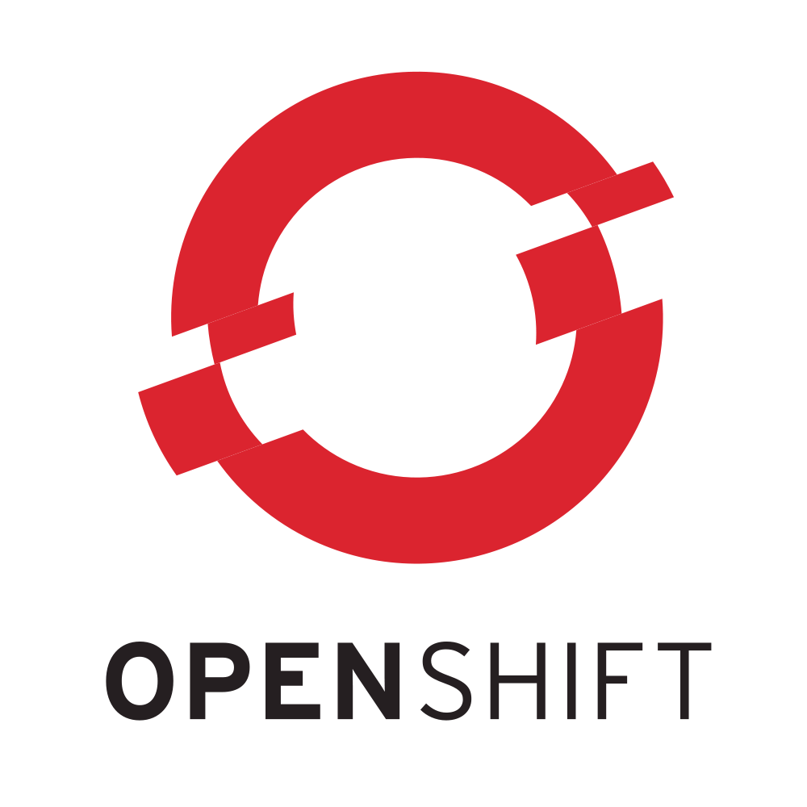

Building a modern PaaS:
Docker, Kubernets, & OpenShift - FOSS Community FTW!
Presented by:
Steven Pousty
bit.ly/1AFGACa
@TheSteve0 on Twitter, IRC, Instagram, Ingress, Skype, SmugMug, and Github
Cloud Services
Quick Demo:
OpenShift Now
Create a new PHP app from the command line:
rhc app create newphp -t php-5.4
Enter the new local git repo and modify a file:
cd newphp
vim index.php
Commit the change, push it to the app:
git commit -am "Comment"
git pushSo Why a New PaaS?
- Three years in, we've learned a lot about PaaS
- As more people focus on PaaS, more tools are becoming available
- We want to combine the best user experience in PaaS with the best underlying technologies
Built for Speed: Project Atomic

|
|
Docker
What is a Container?
 |
|
Containers vs. VMs

Layers and UFS

Layers and UFS
- One or more read-only file systems and one read/write file system
- All presented as a single file system via one of several methods: device mapper thin provisioning (direct-lvm, loopback-lvm) or at the filesystem level (btrfs, OverlayFS)
- Behavior is similar to using a LiveCD
"Data Volume Container": A Docker container with only a read/write file system, either strictly within the container or linked to real storage on the host
Images: More like git than tar
- Images can be pulled from and pushed to a remote registry.
- Images can be versioned and tagged.
- Containers can be
diffed to show how they differ from their base images.
Container Operations
Instantiate a Docker container with docker run:
$ docker run -i -t nhripps/centos /bin/bash
bash-4.1# exit
exit
List running and exited docker processes with docker ps:
$ docker ps -l
CONTAINER ID IMAGE COMMAND CREATED STATUS NAMES
7c4ef3596fa5 nhripps/centos:latest "/bin/bash" 49 seconds ago Exited (0) grave_newton
Rejoin containers with docker attach:
$ docker start grave_newton
grave_newton
$ docker attach grave_newton
bash-4.1# exit
exitDocker Containers as Daemons
Start a container as a detached process with docker run -d:
$ docker run -d nhripps/nginx:base
1aa9f0bd1418f951a590c12ad717ea8af639dd29969ee3f59dfd87da1da23c4e
$ docker ps
CONTAINER ID IMAGE COMMAND PORTS NAMES
1aa9f0bd1418 nhripps/nginx:base "/bin/sh -c '/usr/sb 80/tcp elegant_bell
Use the -P flag to automatically map container ports to the Docker host:
$ docker run -d -P nhripps/nginx:base
1c2e06d8f85e6e034dfd1f7e822b32ed3f4ddf1d5760011d1e84a88a589f50f3
$ docker ps
CONTAINER ID IMAGE COMMAND PORTS NAMES
1c2e06d8f85e nhripps/nginx:base "/bin/sh -c '/usr/sb 0.0.0.0:49153->80/tcp loving_mclean
Note that the process still runs as a foreground process within the container.
Linking Containers
|
Docker: Pros and Cons
|
PROS:
|
CONS:
|
How we use Kubernetes
Kubernetes Terminology
 |
|
Node Daemon:
kubernetes-kubelet

- Primary responsilibity: pod metadata and management
- Maintain a record of pod state
- Take instructions from the cluster master
Kubernetes Daemon:
kubernetes-proxy
- Mapping of a minion host port to a pod label is called a service
- The proxy service maps a common port on every node to relevant pods across the entire cluster
- It can forward both HTTP and UDP
Kubernetes Cluster Management - the control pane
 |
|
etcd
- Highly available key/value data store
- Built-in clustering support
- RAFT consensus-based algorithm for updates

controller-manager
and Replication Controllers
|
The Kubernetes API
A REST api to interact with Kubernetes
- Minions (docker hosts)
- Pods (docker container configurations)
- Services (port proxy mappings)
- Replication Controllers (replicated, monitored pod deployments)
OpenShift
What does OpenShift Bring to the Party
- A Built-in Software Defined Network
- A Well Defined Workflow from Code to Deployed Application
- A Much Friendlier Interface with Monitoring and Reporting
Networking Layer
- Using OpenVSwitch
- Handles IP routing at the application level in terms of isolation and discoverability
- Provides Load Balancing - HAProxy in it's own pod
Applications in OpenShift 3
|
|
Build Options
- docker-builder - pulls docker images and merges code
- Source-to-Image (STI) - take a docker image and source and run it through a build
- BuildConfig - A url for code + a build type above + auth code for using webhooks
Application Lifecycle:
Integrating with CI and CD through "triggers"
|
Make a platform that is aware of changes:
...so that the entire product lifecycle is |
What we make easier
- Configurations
- Collections of Kubernetes and OpenShift 3 objects
- Parameterized templates
- Post-processed
configs - Builds
- Where is the code coming from?
- How do we turn it into a Docker image?
- Deployments
- When do we deploy?
- How do we deploy?
- What should the deployment look like?
Teams and Management
- Users, Teams and Projects
- A
projectcontrols access to a set of resources - Projects have hard and soft resource limits
- Projects are based on organizational boundaries
- Quota and Usage
- Leverage Kubernetes to get fine-grained resource control
- Performance policies can be specified along many dimensions
Thank You!
Learn More:
- Docker: docker.com
- Kubernetes: github.com/GoogleCloudPlatform/kubernetes
- OpenShift 3: github.com/openshift/origin